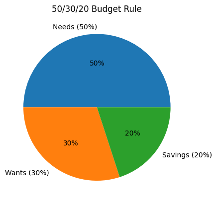
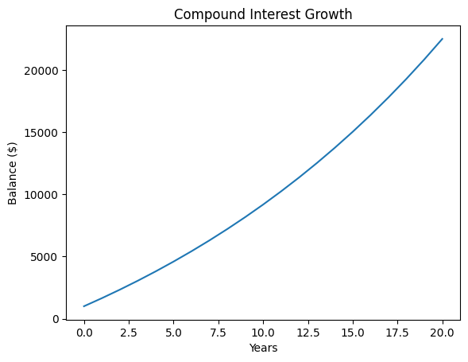

A budget is a plan for how you will spend, save and invest
your money. Begin by selecting a time period—such as a
month or school term—and listing all sources of income.
Next, track every expense: tuition and fees, textbooks,
housing, groceries, transportation, entertainment and
discretionary purchases. Compare your total spending to
your income and adjust so you live within your means.
Grouping expenses into categories like needs, wants and
savings makes it easier to see where to cut back or save
more. A popular guideline is the 50/30/20 rule: use
50 % of your income for needs, 30 % for wants and 20 % for
savings or debt repayment. Building an emergency fund to
cover three to six months of expenses can help you avoid
debt when unexpected costs arise.

The 50/30/20 rule suggests allocating roughly half of your after‑tax income to needs, 30 % to wants and 20 % to savings or debt repayment.
Compound Interest
Compound interest is interest earned on both
your original principal and on the interest already credited
to your account. Because interest is added back to the
balance, future interest is calculated on a larger amount
each period. For example, if you deposit $100 at a 5 % annual
rate, you’ll have $105 after one year and $110.25 after two
years because you earn interest on the $5 from the first
year. Over decades, compound growth can dramatically
increase your savings. Starting early is powerful: someone who
invests $1,000 at age 18 and contributes $50 every month at
5 % could have more than $20,000 by age 40. Even small
contributions add up quickly when earnings are added to
prior interest.

Illustration of compound growth: with a starting principal of $1,000 and modest annual contributions, the balance grows steadily over 20 years as interest is earned on both principal and accumulated interest.
Credit Scores
Your credit score is a three‑digit number that
helps lenders gauge how likely you are to repay a loan. In
the U.S., most scores range from 300 to 850; the higher
your score, the easier it is to qualify for credit and the
lower the interest rate you’re likely to be offered. Credit
scores are calculated from the information in your credit
reports, including payment history, outstanding balances,
the length of your credit history, new credit applications
and the mix of credit you use. To improve your score,
pay all bills on time, keep credit card balances well
below their limits, maintain older accounts to lengthen
your credit history and review your reports regularly for
errors or fraud. You can request a free credit report
from each of the major credit bureaus once every 12
months through AnnualCreditReport.com.
Student Loans
Many students rely on federal loans to pay for college and
graduate school. Direct Subsidized Loans are based on
financial need; the government pays the interest while you
are in school at least half‑time, during the grace period
and during deferment. Direct Unsubsidized Loans are
available to undergraduate and graduate students regardless
of need, but interest accrues from the time the loan is
disbursed. Private student loans typically have higher
interest rates and fewer borrower protections. To reduce
the total cost of your loan, try to pay the interest
as it accrues, make extra payments when possible and
consider scholarships, grants and work‑study programmes to
borrow less.
Roth IRA
A Roth IRA is an individual retirement
arrangement funded with after‑tax dollars. Unlike
traditional IRAs or 401(k)s, contributions to a Roth are
not tax‑deductible, but any earnings and qualified
withdrawals are tax‑free. Because you pay taxes up front,
a Roth can be especially beneficial if you expect to be in
a higher tax bracket in retirement. There is an annual
contribution limit (several thousand dollars) that depends
on your age and income. You can withdraw your
contributions (but not earnings) at any time without
penalty, and Roth IRAs have no required minimum
distributions in retirement.
401(k) Plans
Many employers offer 401(k) plans, a type of
defined‑contribution retirement account that lets you defer
part of your salary into an individual account before
income taxes are taken out. Employers often match a
portion of your contributions—commonly 3 % to 5 % of
your pay—which is essentially free money. The IRS sets a
yearly limit on how much you can contribute, and your
contributions plus earnings grow tax‑deferred until you
withdraw them in retirement. Participants choose the
investments in their accounts, typically from menus of
stock, bond and money‑market funds. Starting early and
contributing enough to get the full employer match can
significantly boost your savings. However, withdrawals
before age 59½ generally trigger taxes and a penalty, so
401(k) funds are best left untouched until retirement. Be
sure to understand your plan’s vesting schedule, fees and
investment options so you can make informed choices.
Inflation and Purchasing Power
Inflation reduces the purchasing power of money: as
prices rise, each dollar buys fewer goods and services.
The U.S. Consumer Price Index, which measures the cost of
a basket of typical purchases, surged in 2021–2022 as
supply‑chain disruptions and energy price spikes pushed
inflation to multi‑decade highs. To stay ahead of
inflation and preserve your standard of living, it’s
important to save and invest so your money grows faster
than prices rise. Investing in diversified stocks, bonds
and other assets can help your portfolio outpace
inflation over the long term.